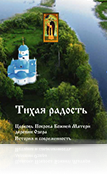
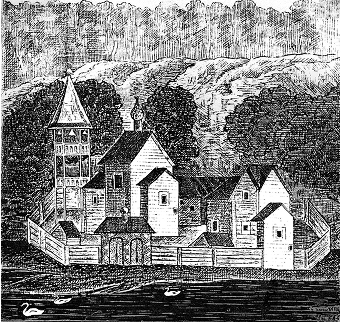
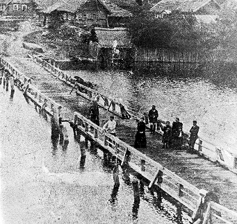

{kind=link}
{kind=link}
Городские монастыри обыкновенно созидались набожным усердием высших церковных иерархов, а также князей, бояр, богатых горожан — людей, которые оставались в стороне от основанных ими обителей. Пустынные монастыри имели более самобытное происхождение, они основывались людьми, которые отрекаясь от мира, уходили в пустыню, там становились руководителями собиравшегося к ним братства и сами вместе с ним изыскивали средства для построения и содержания монастыря. Иные основатели таких пустынных монастырей становились отшельниками ещё до пострижения, подобно преподобному Сергию Радонежскому, но большинство проходило иноческий искус в каком‑либо монастыре, обыкновенно также пустынном, и уже оттуда монахи уходили для уединения и создавали новые пустынные обители. Три четверти пустынных монастырей ХIV-ХV веков были такими колониями.
Таким же образом был создан и Покровский Княже-Озёрский (В источниках встречается вариант со старорусским корнем: Княже-Езерский) мужской монастырь на реке Желче, основателем которого стал преподобный Иларион Гдовский. К сожалению, о жизни и подвигах преподобного Илариона сведений никаких не сохранилось, кроме того что этот святой был учеником преподобного Евфросина Псковского (1386–1481) и выходцем из Спасо-Елеазаровского монастыря, в котором он был пострижен в монашество. Но, проследив вслед за В.О. Ключевским общий путь основателей пустынных монастырей, мы можем получить некоторое представление о жизни и подвигах преподобного Илариона. Будущий основатель монастыря готовился к своему делу продолжительным искусом обык-новенно в пустынном же монастыре под руководством опытного старца. Он проходил разные монастырские службы, начиная с самых чёрных работ, при строгом посте, изнуряя свою плоть днём, ночью же — бодрствуя и молясь. Так достигалось отречение от своей воли, послушание — главная монашеская добродетель. Проходя эту школу физического труда и нравственного самоотвержения, подвижник, часто ещё юный, вызывал среди братии удивлённые толки, опасную для смирения «молву» и одобрение. В результате подвижнику приходилось бежать из воспитавшей его обители от тщетной славы человеческой. Он искал безмолвия в настоящей глухой пустыне, и настоятель охотно благословлял его на это.
Мы не знаем реальной причины, по которой святой Иларион покинул Елеазарову обитель ввиду отсутствия его жития. Известно только, что он стал ходить по лесным дебрям, ища места, где бы Бог указал ему жить. Путь, который он прошёл от обители преподобного Евфросина до места своего будущего поселения на реке Желче, нам не известен. Но осталось предание, что недалеко от селения Дряжно, при ключе, вытекающем из пригорка, жил прп. Иларион Гдовский. Место его подвигов раньше было обозначено деревянным срубом. Источник этот существует и поныне, находится он в километре от деревни Дряжно Струго-Красненского района Псковской области. Местные жители до сих пор берут из него воду, но деревянный сруб не сохранился. Для постоянного жительства преподобный выбрал иное место — пустынный острове (предположительно, нынешний полуостров был создан стараниями монахов, засыпавших протоку, отделявшую остров от Сорокового бора) на реке Желче (будущий погост Озера).

Обитель прп. Илариона. Рисунок с иконы XVII века

Мост через реку Желчу (д. Озера). Начало XX векаМы не знаем реальной причины, по которой святой Иларион покинул Елеазарову обитель ввиду отсутствия его жития. Известно только, что он стал ходить по лесным дебрям, ища места, где бы Бог указал ему жить. Путь, который он прошёл от обители преподобного Евфросина до места своего будущего поселения на реке Желче, нам не известен. Но осталось предание, что недалеко от селения Дряжно, при ключе, вытекающем из пригорка, жил прп. Иларион Гдовский. Место его подвигов раньше было обозначено деревянным срубом. Источник этот существует и поныне, находится он в километре от деревни Дряжно Струго-Красненского района Псковской области. Местные жители до сих пор берут из него воду, но деревянный сруб не сохранился. Для постоянного жительства преподобный выбрал иное место — пустынный острове (предположительно, нынешний полуостров был создан стараниями монахов, засыпавших протоку, отделявшую остров от Сорокового бора) на реке Желче (будущий погост Озера).
В ХV веке местность, куда пришёл на подвиг пустынножительства и безмолвия «божественный»Иларион, представляла собой страшные дебри, покрытые дремучим лесом, носящим название Сорокового бора, и непроходимыми болотами. Место было малонаселённым, при этом народом непрямодушным, закоснелым в невежестве и суевериях. Здесь водились шайки разбойников, имевших свои землянки у берегов Чёрной речки. По устному преданию, прп. Иларион нёс свой молитвенный подвиг в дупле дерева, которое сохранилось до наших дней и находится сейчас в часовне, построенной вокруг него. Около часовни местные жители показывали яму, называя её «Иларионовой», но не объясняли, почему она носит такое название. Может быть, здесь было жилище преподобного, например его землянка. Но это — лишь предположение. Никаких письменных свидетельств не сохранилось ни о его жилище, ни о том, что святой молился в дупле. Об этом нет упоминания даже в Акафисте преподобному Иллариону (текст Акафиста преподобному Иллариону был передан настоятелю церкви Божией Матери иерею Евгению Михайлову архимандритом Львом (Дмитроченко) в 1993 году в рукописном виде). День и ночь подвижник славил Господа в молитвах и песнопениях, день и ночь проводил в слезах и посте. Лишь дикие звери ревели по ночам в пустыне, а птицы вторили пению святого. Преподобный же, созерцая Бога, беседовал с ним умом и сердцем. Впрочем, мы можем только догадываться о внутренней жизни святого, о его быте, о том, сколько трудов он приложил, чтобы жить одному в лесу. Ведь в условиях сурового климата Руси тяжёлый труд становился элементарным условием выживания подвижника.
Через некоторое время Господь возвеличил место пустынножительства Своего угодника, к нему стали стекаться христолюбцы, «взыскующие горнего града». Около кельи святого Илариона строились другие для пожелавших жить вместе с ним такой же жизнью. Таким образом составилось пустынническое братство. В 1470 году (по другим данным — в 1440 году) здесь был основан Покровский Княже-Озёрский мужской монастырь, а преподобный Иларион стал игуменом этого монастыря. При его жизни в монастыре были возведены две церкви — Покрова Божией Матери и Рождества Христова. Все монастырские постройки были деревянные, и ни одна из них не сохранилась до нашего времени. Обитель находилась на границе с Ливонским орденом, поэтому иноки постоянно претерпевали нападения воинственных ливонцев.
Преподобный Иларион почил 28 марта (ст.ст.) 1476 года и был погребён братией монастыря в церкви Покрова Пресвятой Богородицы. К сожалению, нет данных о том, когда был канонизирован прп. Иларион Гдовский. Благословение епархиального архиерея на местное почитание святого до ХVIII века, как правило, не запечатлевалось особыми грамотами, а сохранялось через ежегодное празднование памяти святого.Строгость жизни святого основателя монастыря и насельников его, а также молитвенные их подвиги привлекали сюда не только богомольцев, но и крестьян, которые селились вокруг обители. Так на месте одинокой хижины отшельника постепенно вырос монастырь и образовалось крестьянское поселение. Лесной пустынный монастырь сам по себе, в своей тесной ограде, представлял земледельческое поселение, хотя и не похожее на мирские крестьянские села. Монахи расчищали лес, разводили огороды, пахали, косили, ловили рыбу, как и крестьяне. В монастыре были свой дегтярный завод и мельница (в д.. Ореховцы).
Благотворное влияние монастыря простиралось и на население, жившее за его оградой. округ пустынного монастыря образовывались мирские крестьянские поселения, которые вместе с иноческой братией составляли один приход, тянувшийся к монастырской церкви. Впоследствии монастырь исчез, но крестьянский приход с монастырской церковью остался. В 1687 году на месте Покровской церкви, возведённой прп. Иларионом, был построен новый деревянный храм.
В 1695 году монастырь был приписан к Псковскому Архиерейскому дому.В 1764 году обитель преподобного Илариона была упразднена указом Екатерины Второй об отчуждении «разом всех монастырских имуществ» в пользу государства. Княже-Озёрский монастырь закрыли, иноческое хозяйство пришло в упадок, церковь Покрова Богородицы стала приходской.